Hono Bay Doodle
Inspired by Waikiki, Honolulu · Interactive Web Doodle · Completed Apr 2024
🌴 About the Project
Hono Bay Doodle is an interactive p5.js art piece inspired by Google Doodle and the ever-changing weather of Honolulu’s rainy season. Instead of a static illustration, users shape the island city through clicks, music, and unexpected visual events.
- Dynamic weather driven by user actions
- Living ocean waves and animated ship
- City lights, music, randomness, and surprise
1000+ lines of .JS in 1 month
🛠 Design & Development Overview
Ideation
The project began with a moving cloud experiment in p5.js and evolved from a personal trip to Waikiki during Honolulu’s rainy season. The contrast between sunshine, sudden rain, nature, and urban life shaped the core idea.
Interaction Design
The doodle emphasizes interaction over realism. Smoke bubbles from a passing ship influence cloud density and rainfall, while buttons and clicks allow users to reshape lighting, weather, and color in real time.
Iteration
Features were developed modularly—buildings, ocean, ship, cloud—allowing new behaviors to be added without breaking existing ones. Randomness was intentionally introduced to ensure every session feels unique.
❓ Ideation: Why build this doodle?
It all started with a simple moving cloud in p5.js on OpenProcessing, sparked by memories of a December trip to Waikiki Beach, where the weather flips moods almost hourly. During one project, I experimented with an interactive time-and-weather system, letting users experience the island’s day-to-night transitions and its rainiest moments.
For this project, I took it up a notch. I wanted users to truly feel the energy and calm of Honolulu in one immersive experience. The result, “Hono Bay Doodle”, is a playful web doodle with music capturing the island’s liveliest season, letting users interact with colors, time, and weather—and stumble upon delightful, unexpected surprises along the way.
🛠 Building Process
Stage 1: Sky, Landscape, Buildings
First, I added a cluster of buildings at the lower left to reflect Honolulu’s mix of urban and natural landscapes. The tall buildings along the bay, offering ocean views, are a defining feature of Waikiki. The windows with lights on are randomly generated based on the time of day—more lights appear at night than during the day.
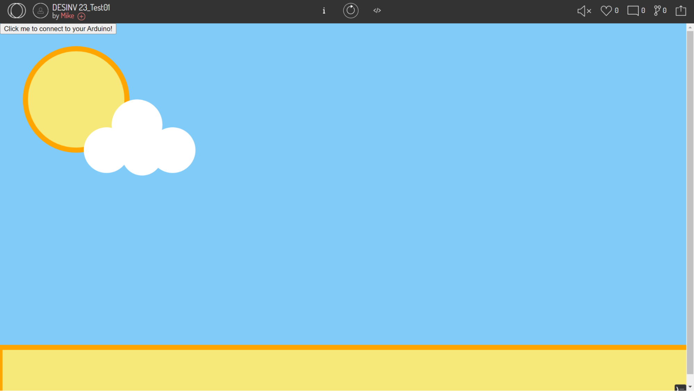 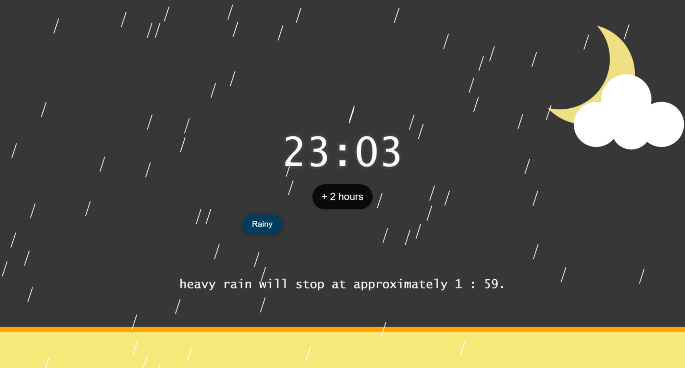To make the scene more interactive, I added a “Lights” button in the center. Pressing it reshuffles which windows are lit, letting users sync the lights with the rhythm of the island-style song “Uma” by J Boog (Aug 2023). Additionally, clicking on any of the four buildings randomly changes its color, adding another layer of playful interaction.
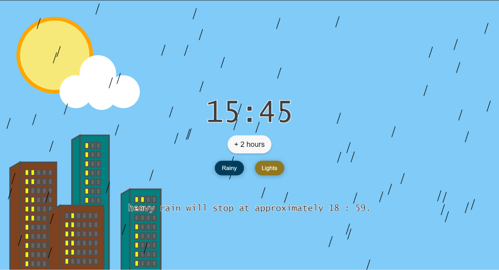 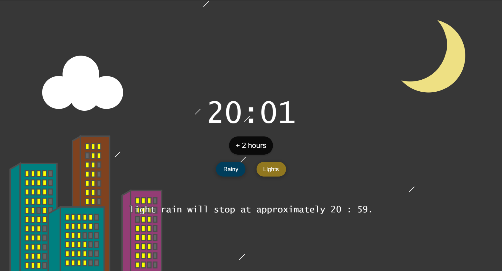Stage 2: Beach, Ocean, Ship
Next, I added the beach, ocean, and a ship—elements that left the strongest impression during my trip. Using math functions, I created an ocean with dynamic waves and made the ship ride naturally along them.
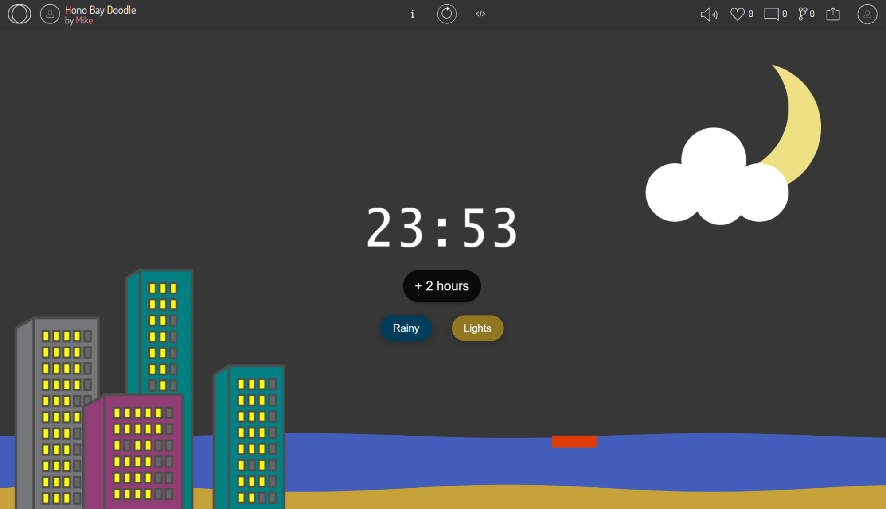 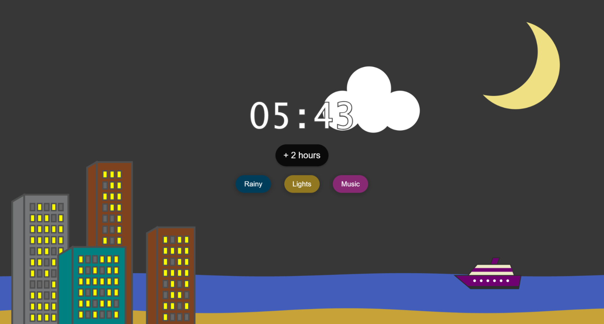The ship was drawn step by step, starting from a rectangle base, then the upper structure, and finally the funnel. The trickiest part was determining the coordinates of each moving vertex. By combining calculations on sketch paper with helper functions and global class variables in the code —and iterating with AI assistance— I was able to accurately compute the (x, y) positions of every vertex based on the ship’s current location.
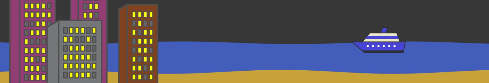

Stage 3: Smoke Bubbles & Rain
This was the most challenging part of the design. After adding the ship, I wanted users to interact with it in a way that would influence the weather. To do this, I created smoke bubbles that affect cloud thickness, which in turn changes the intensity of the rain.
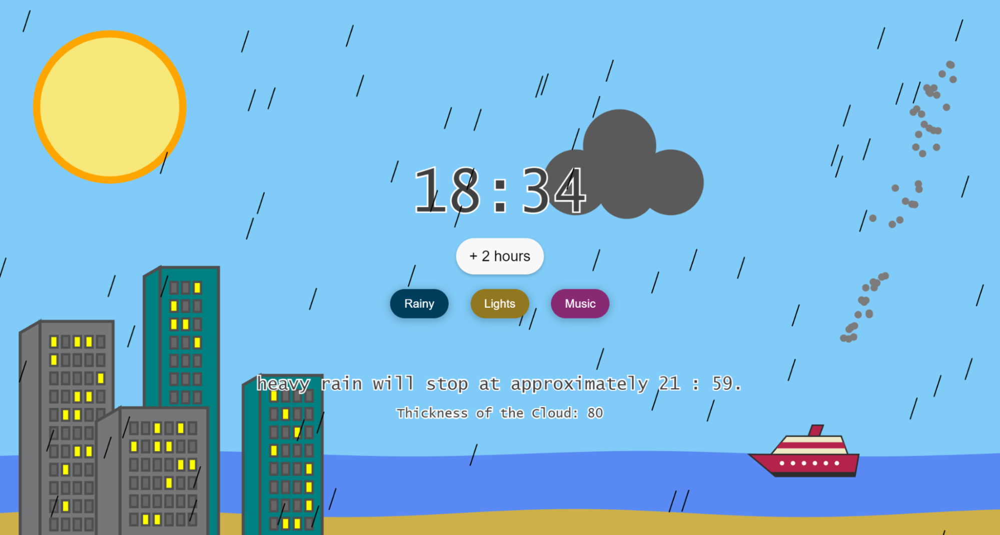 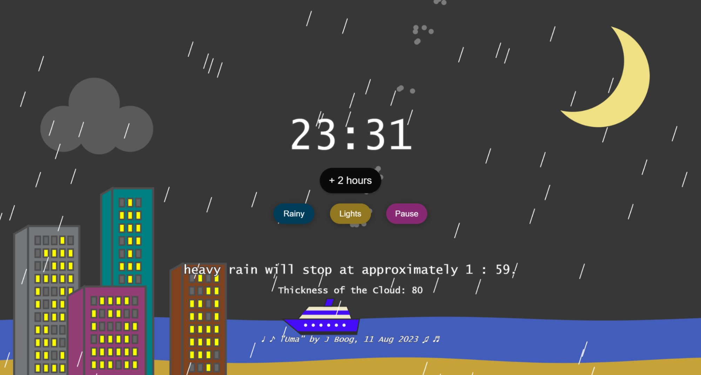Clicking the ship releases three smoke bubbles from its funnel. When a bubble hits the cloud, it increases the rain—more bubbles make the cloud darker and the rain heavier. The current cloud thickness, representing the number of bubbles, is shown at the bottom center. Users can also click the “Rainy” button to generate a random rain level with a default number of bubbles, even without interacting with the ship.
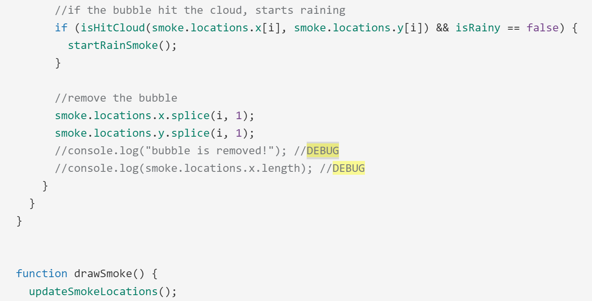 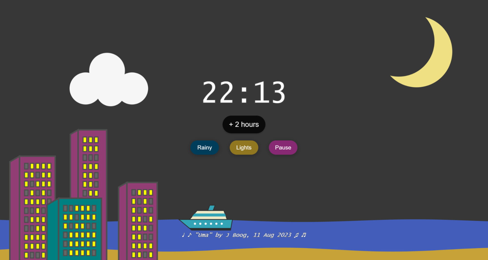 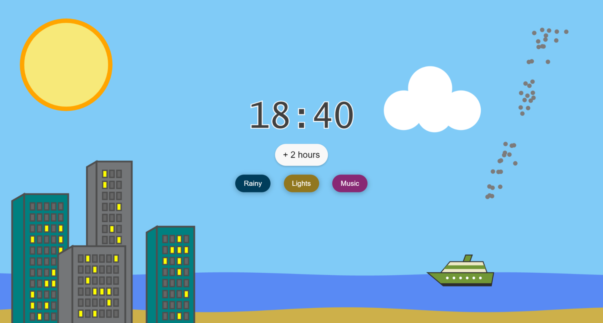THE END
🐠 How to pronounce Humuhumunukunukuāpuaʻa?